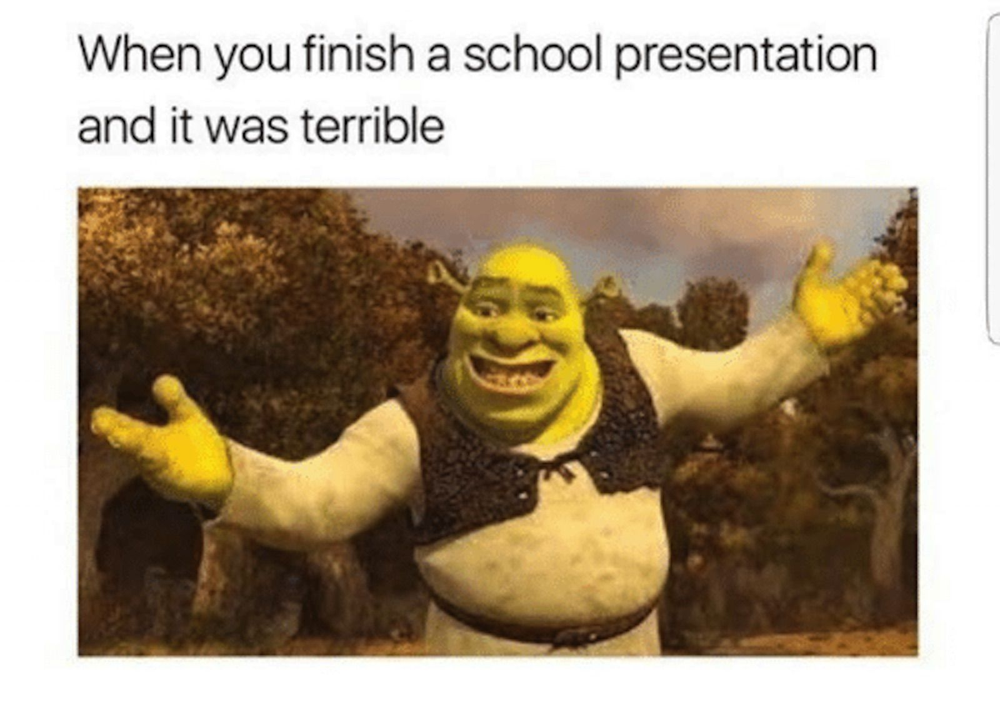

Javascript pt 2, this time its personal
I tried to learn a bit of javascript this summer but didn't get very far.
I am very much looking forward to seeing the capabilities of the browser for supporting java script functions.

Back to index page